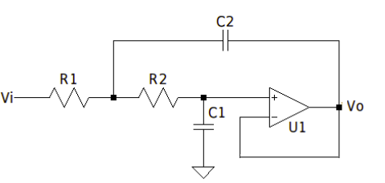
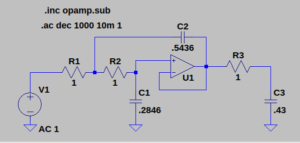
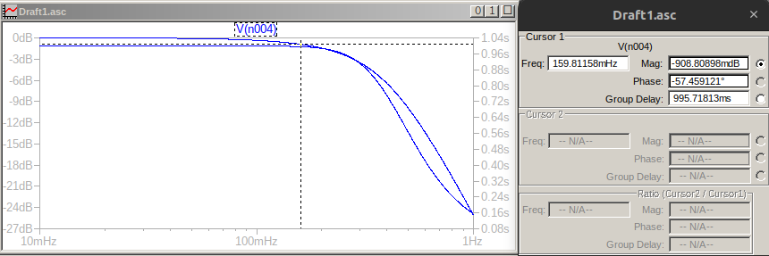
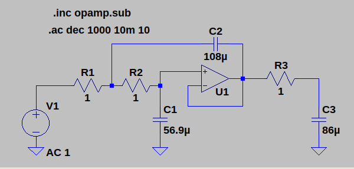
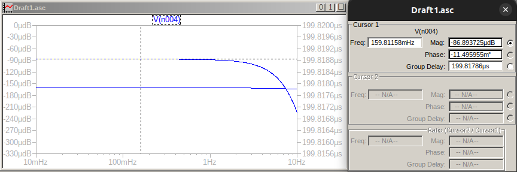

TP Semanal 5
Enunciado
Diseñar un filtro pasabajos normalizado Bessel para obtener un Retardo de Grupo D(w) de 1 segundo.

\[D[seg]\]
|
\[\alpha_{Max} [dB]\]
|
\[w_p [\frac{rad}{seg}]\]
|
\[w_s [\frac{rad}{seg}]\]
|
|---|---|---|---|
1 |
1 |
1 |
2.5 |
Utilizando el metodo de Storch ( pag. 403 del Schaumann) obtener la T(s) Bessel para N: 2, 3 y 4 normalizados para D = 1
Elegir la T(s) con el minimo orden que cumple con ⍺Max = 1 dB
Evaluar el Retardo de Grupo D(2.5) . Expresar en forma porcentual [%] el error o desviamiento respecto a D(0)
Sintetizar el circuito NORMALIZADO con estructuras Sallen-Key con K=1 ( real. negativa unitaria )

CODE
[2]:
import scipy.signal as sig
import matplotlib.pyplot as plt
from pytc2.sistemas_lineales import tf2sos_analog, pretty_print_SOS, analyze_sys, pretty_print_lti
from IPython.display import display, Math, Markdown
import numpy as np
OMEGA = 1.0 # Frecuencia en radianes por segundo
ALPHA_MAX = 1.0
sistemas = []
display(Markdown("### Transferencias"))
for orden in [1,2,3,4]:
z,p,k = sig.besselap(orden,'delay')
num, den = sig.zpk2tf(z,p,k)
sos_cheb = tf2sos_analog(num, den)
display(Markdown("## Bessel Orden: " + str(orden)))
display(Math("T(s) = " + pretty_print_lti(num=num,den=den, displaystr=False)))
display(Math("T(s) = " + pretty_print_SOS(sos_cheb, mode='omegayq', displaystr=False)))
H = sig.TransferFunction( num, den )
sistemas.append(H)
w, H_jw = sig.freqresp(H, [OMEGA])
ts_alpha_max = 20 * np.log10(1/abs(H_jw[0]))
display(Math(r"\alpha_{max}(w=1) = %0.4f dB" % ts_alpha_max))
analyze_sys(sistemas, ["n=1","n=2","n=3","n=4"])
plt.show()
Transferencias
Bessel Orden: 1
$\displaystyle T(s) = \frac{ 1 }{s + 1 }$
$\displaystyle T(s) = \frac{ 1 }{s + 1 }$
$\displaystyle \alpha_{max}(w=1) = 3.0103 dB$
Bessel Orden: 2
$\displaystyle T(s) = \frac{ 3 }{s^2 + s \,\, 3 + 3 }$
$\displaystyle T(s) = \frac{ 3 }{s^2 + s \frac{1.732}{0.5774} + 1.732^2}$
$\displaystyle \alpha_{max}(w=1) = 1.5970 dB$
Bessel Orden: 3
$\displaystyle T(s) = \frac{ 15 }{s^3 + s^2 \,\, 6 + s \,\, 15 + 15 }$
$\displaystyle T(s) = \frac{2.322 }{s + 2.322 } . \frac{6.459 }{s^2 + s \frac{2.542}{0.691} + 2.542^2}$
$\displaystyle \alpha_{max}(w=1) = 0.9030 dB$
Bessel Orden: 4
$\displaystyle T(s) = \frac{105 }{s^4 + s^3 \,\, 10 + s^2 \,\, 45 + s \,\, 105 + 105 }$
$\displaystyle T(s) = \frac{9.14 }{s^2 + s \frac{3.023}{0.5219} + 3.023^2} . \frac{11.49 }{s^2 + s \frac{3.389}{0.8055} + 3.389^2}$
$\displaystyle \alpha_{max}(w=1) = 0.6300 dB$


Manuscritos
[4]:
from IPython.display import IFrame
IFrame("./tp5tc2.pdf", width="100%", height="600")
[4]:
Simulaciones
D(1) = 1seg


D(1) = 200useg

